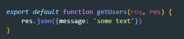
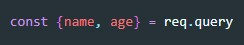
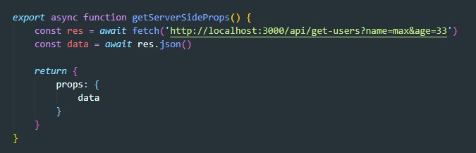

В папке pages создаем папку api, внутри этот папки создаем файл, называем его так как будем потом проходить по URL. т.е если назовем get-users то путь до эндпоинта будет выглядеть так: localhost:3000/api/get-users
В этом файле создаем простую функцию которая будет принимать reques и response
Что бы вернуть что то в JSON мы обращаемся к res и вызываем метод json. Если мы хотим вернуть какой-то код, то вызываем метод status
так же можем получать query параметры
Здесь все просто, в getServerSideProps создаем запрос до эндпоинта и обрабатываем как обычно
